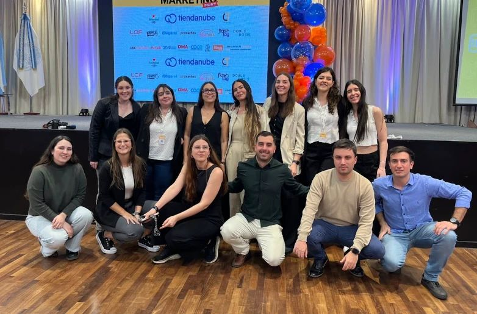

Qué hacemos

- 01Line up y contenidoConseguimos speakers que la gente quiere escuchar y armamos el cronograma.
- 02Sponsors y marcasSumamos marcas con activaciones que tienen sentido para el público.
- 03ProducciónEscenario, pantallas, acreditaciones, stands y equipo el día del evento.
- 04ComunicaciónPiezas, redes, mails y la web, para llenar la sala antes de abrir la puerta.
- 05CoberturaFotos, video y reels para que el evento siga vivo después.


¿Tenés una marca? Hablemos.
Contanos qué evento tenés en mente: lanzamiento, convención, jornada para tu equipo o algo que todavía no existe.